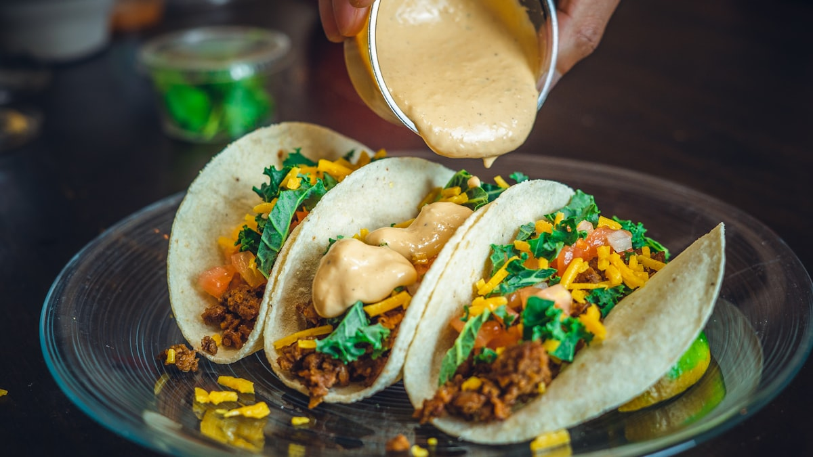
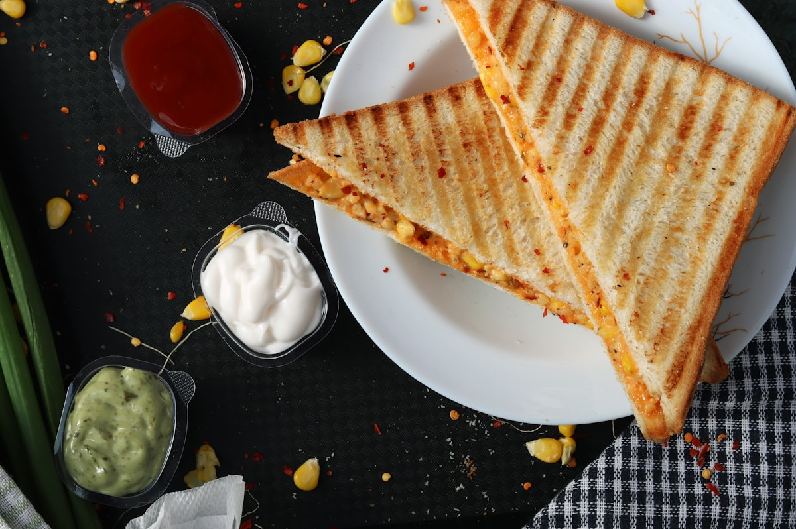

Nuestras Especialidades
SIGNATURE SALVADORAN DISHES
Traditional recipes prepared daily using fresh herbs, imported Salvadoran loroco, artisanal quesillo, and heirloom family marinades.

Hand-Patted Daily
Pupusas Tradicionales
Corn (Maiz) or Rice (Arroz) Masa
Filled with your choice of Revuelta (pork chicharron, refried beans, and melted cheese), Queso con Loroco, Frijol con Queso, or Calabacita. Served piping hot with spiced cabbage curtido and tomato salsa.
$3.50 ea

Antojito Tipico
Yuca con Chicharron
Fried or Steamed Cassava Root
Golden crispy yuca root chunks crowned with seasoned fried pork chicharron, crisp pickled curtido, fresh tomato salsa, and cucumber wedges.
$12.99

Sweet & Savory
Platanos con Crema y Frijoles
Traditional Salvadoran Classic
Sweet ripe fried sweet plantain slices accompanied by creamy Salvadoran sour cream (crema tipica) and slow-simmered seasoned refried black beans.
$8.50